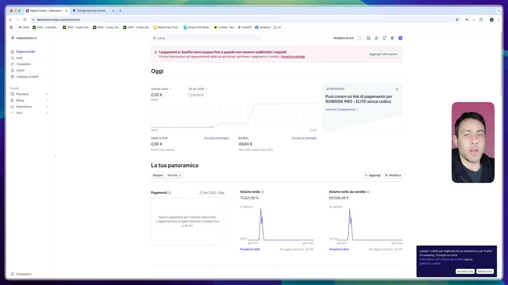
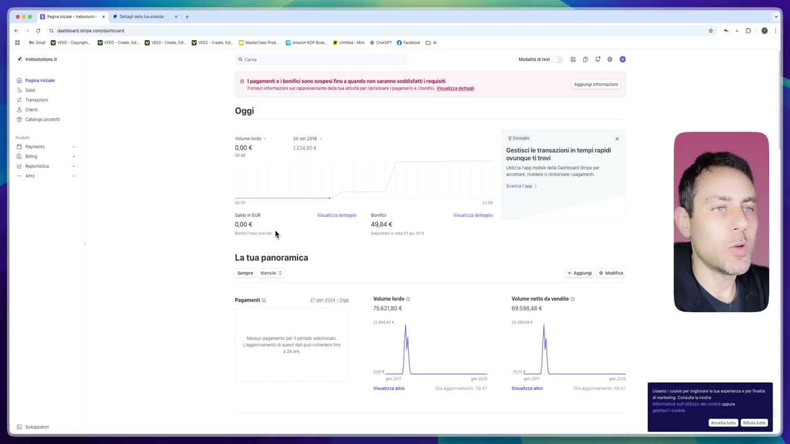
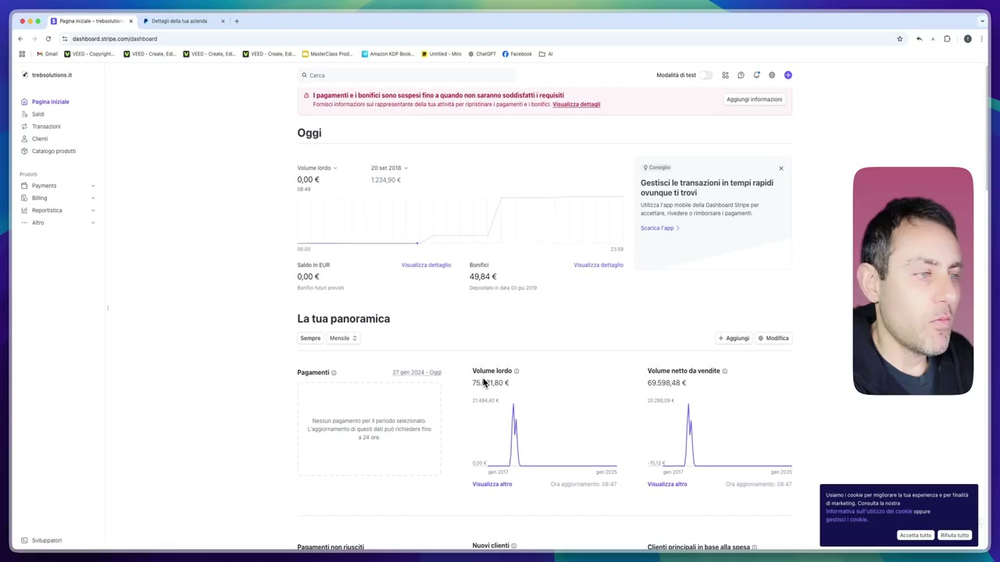
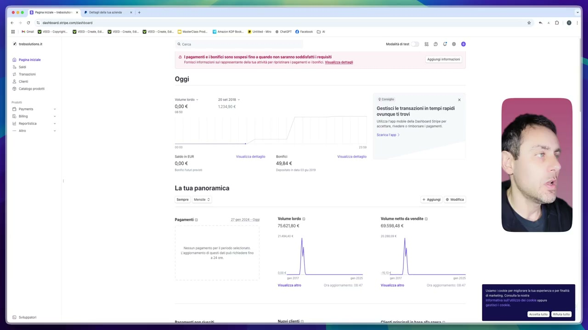
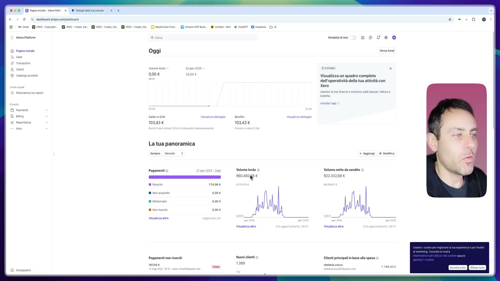
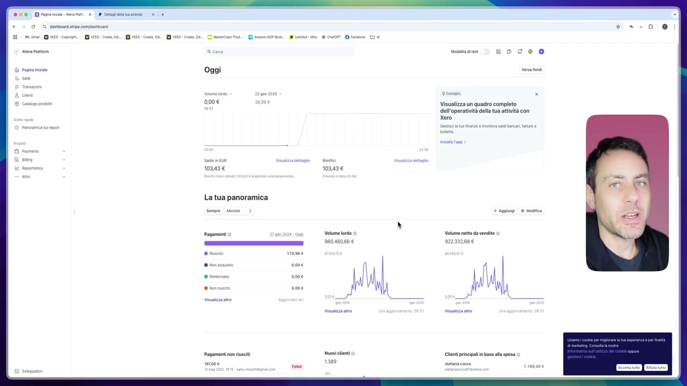
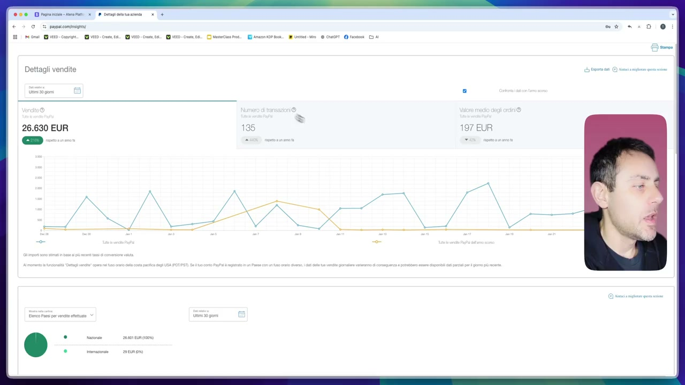
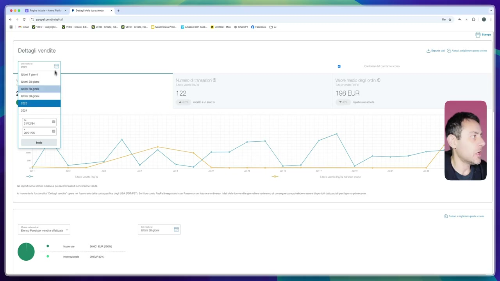
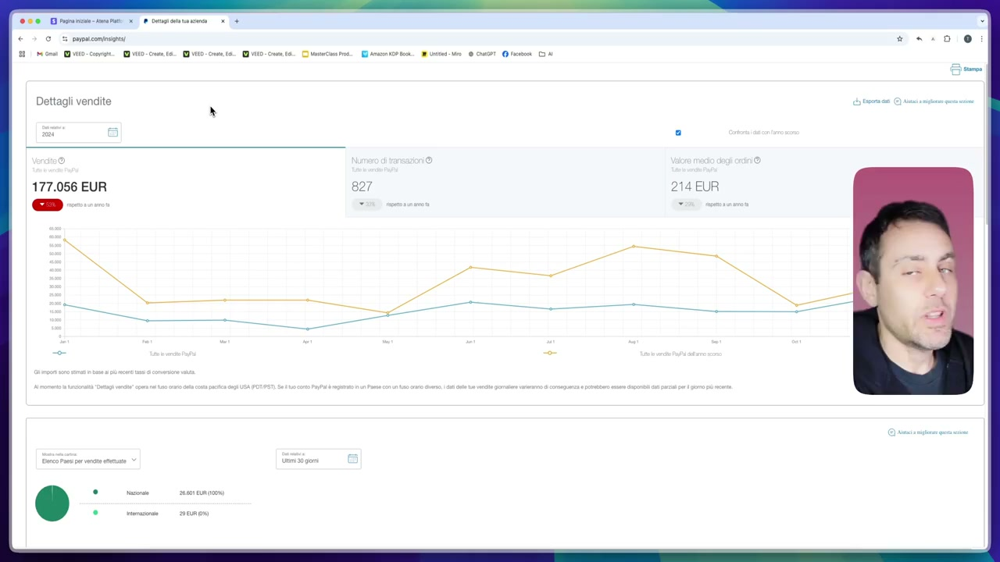

OCR: OILTE SO TESE a on Oct (IVO 16. IVI ID E. in nni 1 dc 8 Qi I 4 tutine a cm nesmani Si O C © ® © pagamenti e bonifici ono sospesi in a quando non saranno soda requisiti rm nani n arse eta a gr trae pope oc Via tti Comes 2 cm Oggi amen 000€ 12z400e Puo! ereare un link i pagamento per ama n ROIBOOK PRO - ELITE senza codice 000€ La tua panoramica Volume lordo © Volume netto da venite © 75621806 6050848 €
Ben tornati all'interno di questo percorso. Direi di iniziare appunto il percorso stesso con quello che dovrebbe essere per ciascun formatore l'ovvio ma che in realtà non è per tanti formatori in quanto la maggior parte delle persone che cercano di spiegare qualcosa in realtà non hanno mai realizzato quel qualcosa o comunque hanno mai ottenuto risultati. Quindi quello che vi mostro all'interno di questo video sono i risultati che io ho ottenuto nel corso del tempo ovviamente dalla vendita di prodotti digitali. Allora quello che io farò ragazzi intanto una piccola premessa perché voglio che ci capiamo. Quello che vi mostro non è quello che voi sicuramente potrete ottenere. Quello che potreste ottenere se avete focus, se avete mindset, se continuate e perseverate nonostante le problematiche che inevitabilmente all'interno di una qualsiasi attività imprenditoriale è la vendita di prodotti digitali per sua natura appunto è un'attività imprenditoriale a tutti gli effetti ma questo è ok quindi non è detto che
OCR: © pagamenti bonifici sono sospesi in a quando non saranno sodi requisiti Fr acne ala at arr pepe nc iui Oggi 000€ LI La tua panoramica Volume lordo 1862180€ Puo! ereare un link i pagamento per ROIBOOK PRO - ELITE senza codice Volume netto da venia 0 8050848 €
quello che vi mostro è il risultato che voi potrete ottenere. Perché allora ve lo mostro perché vi voglio fare capire che tendenzialmente all'interno di questo business si possono fare davvero molti molti soldi ma come ciascun business dovete ovviamente perseverare dovete avere costanza e dovete andare avanti mantenere il timone barra dritta soprattutto quando ci saranno le inevitabili difficoltà che si porranno davanti. I risultati sono quelli che vi mostrerò all'interno di quest dashboard. Dashboard che tra l'altro altra premessa in alcune sezioni oscurerò proprio perché sono dati sensibili di utenti di clienti motivo per cui capirete bene non posso mostrarvi proprio tutto e che vi mostrerò in tempo reale attraverso un refresh farò refresh più volte delle dashboard che vi mostro proprio per farvi capire che quello che vi mostro ragazzi è la realtà e non si sta parlando di teoria o di qualche

OCR: IIETESIII=E a on iO conv O: ou 6 Viti. E) D.C. Cic ansi fs a 9 Ct rc I 4 troni ac @ Pagnini 0 pagamenti e bonifici ono sospesi fin a quando non saranno soda requisiti rn mani ages al ua i arr peperoncini tti cora remo & Oggi 000€ Li Gestisci transazioni in tempi rapidi ‘ovunque ti trovi x La tua panoramica Segr emo © Volume lordo © 75621806 Volume netto d venite 0 6050848 €
screenshot no quello che vi mostro sono i risultati della mia attività di marketing e di vendita di prodotti digitali nel corso degli anni. Allora altra premessa ho utilizzato Stripe in più account perché nel corso del tempo inevitabilmente ovviamente facendo più esperienza ho iniziato ad affinare la metodologia di sincronizzazione appunto degli account con le varie piattaforme ho iniziato con clickfunnels poi mi sono spostato su altre piattaforme basate su Shopify poi mi sono spostato su altre piattaforme basate su wordpress woocommerce ad oggi le piattaforme su woocommerce sono quelle che preferisco ma ripeto è giusto per capirci ok da questa schermata vi mostro il volume ordo di transazioni che ho effettuato nell'intervallo aprile 2018 diciamo dicembre 2018 che è di 75 mila 621.80 Quindi da aprile a dicembre ok che è un volume devo dire che è abbastanza interessante considerato il fatto che io

OCR: OIrTTIT "EI (ti 0 e ttt © CT. rc 3 8 tagamenti e boni sono sospesi ino quando non sarunno soddi euisiti Fc tai apra at i ear popo dn sura set Oggi Gestisci transazioni in tempi rapidi ‘ovunque ti trovi 000€ La tua panoramica Sempre ea © Pagamenti Volume lordo © Volume netto da vendite 7501806 60598486
partivo con il business di prodotti digitali qui tendenzialmente vendevo ebook e ho generato 75 mila 621.80 Questo già vi dovrebbe dare la dimostrazione del fatto che il business di prodotti digitali è un business molto profittevole se lo si sa condurre ed è un business che può davvero darvi estreme soddisfazioni soprattutto a causa del fatto che i margini sono estremamente interessanti considerate che per produrre questi ebook ai tempi non esisteva l'intelligenza artificiale quindi non ho utilizzato nessun programma di intelligenza artificiale a manina ho scritto i miei ebook che poi sono andata a rivendere utilizzando quelle che tempiano le mie expertise ok quindi volume ordo 75 mila 621.80 Questa parte l'ho generata senza ads l'ho generata attraverso metodi di vendita organici quindi attraverso generazione di traffico organico ai tempi i gruppi facebook davano una marea

OCR: 4 tuoni (uti 0 e ttt © Cor. fc 3 0 pagamenti e bonifici sono sospesi fin quando non sario sodi requisiti rn soi arse el a i eee apo n Vuze Oggi 000€ 000€ La tua panoramica Pagamenti o o Volume lordo © 7562180€ soce Gestisce transazioni n tempi rapidi ‘ovunque ti trovi Volume netto da vendite © 60598486 | | || ell
di traffico per cui andava a utilizzare quelli oggi i gruppi facebook ragazzi non ve li consiglio perché a parte una marea di sfigati catatonici che sono al loro interno modo per cui vi dovreste passare il vostro tempo a moderare bannare tutta una serie di cose che da imprenditori vi distraggono dal produrre che è quello che ogni imprenditore dovrebbe fare ad oggi si utilizzano metodi organici che sono essenzialmente diversi rispetto alla seguire il gruppo facebook per poi andare a vendere il prodotto digitale e questo è ok ragazzi quindi tendenzialmente questo è 75 mila 621 volume netto da vendite 69 598,48 andiamo a vedere un altro account che è questo che è un altro account stripe in cui poi vedete che i numeri iniziano a diventare molto più interessanti quindi qui abbiamo un volume lordo di 960.460,66

OCR: © Pamen Oggi 000€ 1390 10343 € 103436 La tua panoramica Sempre dente © Volume lordo 960480gs € | [N NIVA 1) i "ML Visualizza un quadro completo dell'operatività della tua attività con xero Volume netto da vendite 922312686 AIN I, Na Clnti principali base alla spesa ©
Diciamo ragazzi giusto per intenderci un milione di euro ok mentre il volume netto delle vendite è 922.332,68 Tutto questo è stato generato da novembre 2018 fino a maggio 2022 perché questa cosa perché poi a maggio 2022 ho iniziato a variare quelle che erano le piattaforme per spostarmi su piattaforme che mi permettevano di controllare sempre di più i miei asset una delle cose che dico sempre è ragazzi cercate il più possibile di possedere i vostri asset quindi non volgere via piattaforme terzi sì magari all'inizio ci sta ok perché non avete le conoscenze tecniche perché non volete perdere tempo nell'istante in cui c'è qualcosa al lato tecnico che si sminchia e voi non volete intervenire o perché non sapete intervenire cose che ripeto ci sta soprattutto agli inizi a via della vostra attività non avete tutta quell'expertise che potreste avere con 3 4 5 anni di carriera alle spalle

OCR: Oggi 10343€ La tua panoramica sempre Menia © pagamenti e oator Qi 103436 Volume lordo © 96046066 € i tu Wil Visualizza un quadro completo dell'operatività della tua attività con Volume netto da vendite 922332686 Li VM Glnti principali base alla spesa ©
soprattutto di problematiche che avrete risolto nel corso del tempo ma questo è quindi questo è stato un periodo in cui utilizzavo altre piattaforme rispetto alle piattaforme basate su wordpress che tendenzialmente oggi utilizzo e abbiamo un volume lordo di 960.460 Anche in questo caso vi rifaccio il refresh del mio stripe giusto per farvi capire che stiamo parlando di questo non stiamo parlando di teoria ma stiamo parlando di circa un milione di euro generato con la vendita di prodotti digitali tipo ebook videocorsi checklist e quant'altro diciamo ragazzi circa per intenderci un milione di euro generato dalla vendita di prodotti digitali ok ma non vi mostro solamente stripe quello che vi mostro è anche il mio paypal aziendale giusto per mostrarvi anche in questo caso faccio il refresh in questo momento siamo usciti quindi rientro stacco il video e vi dimostro tutto quindi come vi stavo dicendo prima che

OCR: na on AD VO VII VID. C.C mod Lc ct ri DI Dettagli vendite 26.630 EUR =.
paypal mi buttasse fuori ma ci sta visto che paypal ha rigidi criteri di sicurezza era passato un po di tempo da quando ho fatto accesso come vi stavo dicendo questo è il volume delle vendite che ho generato attraverso paypal dai miei store di prodotti digitali nel corso degli ultimi giorni qui potete vedere un 26.630 Che è un più 260 216 per cento rispetto a un anno fa con un numero di transazioni e valore medio degli ordini che in questo caso non vi dico per motivi di privacy giusto per non farvi capire anche qual è il bundle di prodotti digitali che vado a vendere perché ragazzi permettetemi non vi mostro tutto quanto perché alcune cose fanno parte del nuovo aziendale preferisco tenermele per me ok vi mostro anche quello che è successo nel 2025 ok alla data di registrazione di questo video siamo al 27 gennaio 2025 quindi abbiamo 24.101 Quindi nel 2025 generato 24.101 Euro di commissioni e nel 2024 con il mio account paypal 177.056

OCR: 21) brc Evo. cum. I vito:cne a E) ito LA QUID. Cu 6 DI eni. miO Ri © CIT. ct Dettagli vendite Ch u—___-; pres Vi 198 EUR
Quindi diciamo ragazzi circa 200.000 Euro ok cerchiamo di capire 180.000 Euro ok ragazzi qui ho un meno 53 per cento rispetto a un anno fa perché tendenzialmente come vi dicevo mi sono spostato più su altre piattaforme di pagamento ho evitato paypal in determinati checkout per fare un po di abitesti e capire se levitare paypal in determinate situazioni questa ragazzi è strategia ok mi permettesse di aumentare margini e mi permettesse di aumentare il tono sull'investimento ok questo è stato comunque il 2024 abbiamo vendite per 177.056 E come potete vedere ragazzi qual è lo scopo anzi ovviamente faccio il refresh giusto per farvi capire che questi numeri sono veri e non sono gonfiati ritorniamo nel 2024 e vi faccio vedere questa cosa ragazzi

OCR: 21) troni vio. cen Ii: IVI fa. EI 1D- cv 16. Ioni ET) e ttt © Cor. rc 3 Dettagli vendite 177.056 EUR 214 EUR
ancora una volta non per dirvi che sicuramente questi saranno i soldi che voi riuscirete a fare uno schiocco di dita nell'istante in cui iniziate il vostro business di prodotti digitali ma è giusto per andare contro quei cretini che dicono è tutto truffa e tutto cercati un lavoro serio no ragazzi quello che si riesce a generare attraverso questo business le persone che stanno durante la giornata a commentare sulle sponsorizzate su gruppi facebook forse le vedranno dopo 5 6 7 generazioni ok quindi questo è ragazzi applicatevi applicate quello che troverete all'interno di questo percorso e sono sicuro che riuscirete a ottenere dei risultati degni di nota e soprattutto se riuscirete a mantenere la barra dritta cioè se riuscirete a perseverare nel istante in cui ci sono delle problematiche riuscirete a risolvere le problematiche e si vede il vero imprenditore riuscirete ad avere un successo che gli altri tra una puntata in tv stando sul divano e una mangiata di popcorn e birra con gli amici sicuramente non riusciranno mai a vedere in intere generazioni